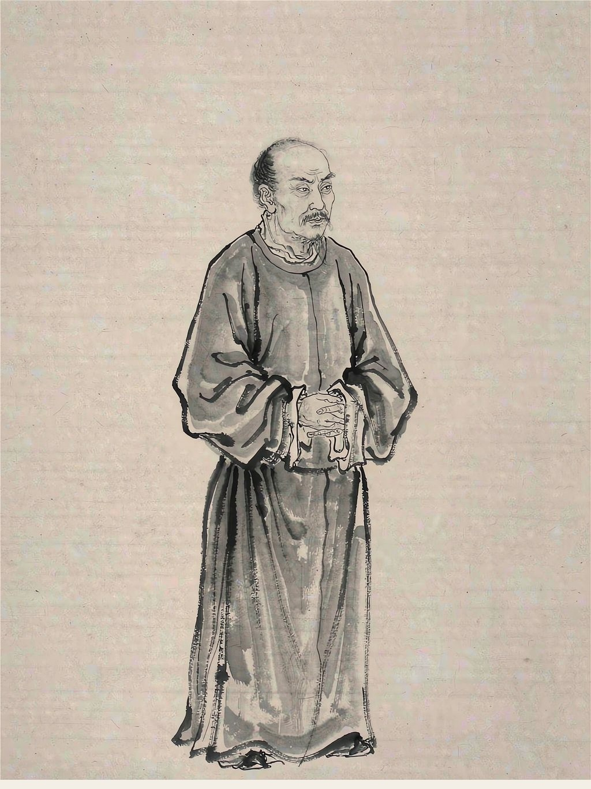

唐代诗人
字子美，自号少陵野老，唐代现实主义诗人，被尊为“诗圣”。其诗沉郁顿挫，多忧国忧民之作，被称为“诗史”。
杜甫 · 五言律诗
国破山河在，城春草木深。 感时花溅泪，恨别鸟惊心。 烽火连三月，家书抵万金。 白头搔更短，浑欲不胜簪。
杜甫 · 五言古诗
岱宗夫如何？齐鲁青未了。 造化钟神秀，阴阳割昏晓。 荡胸生曾云，决眦入归鸟。 会当凌绝顶，一览众山小。
杜甫 · 七言律诗
风急天高猿啸哀，渚清沙白鸟飞回。 无边落木萧萧下，不尽长江滚滚来。 万里悲秋常作客，百年多病独登台。 艰难苦恨繁霜鬓，潦倒新停浊酒杯。